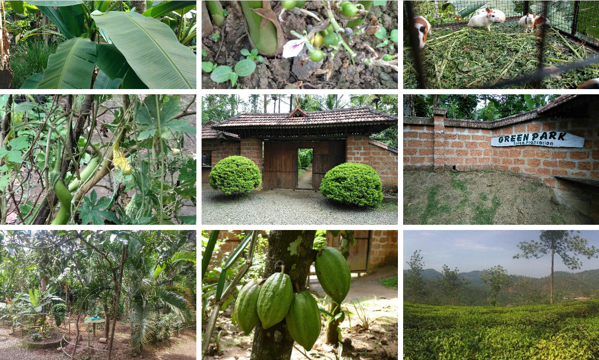
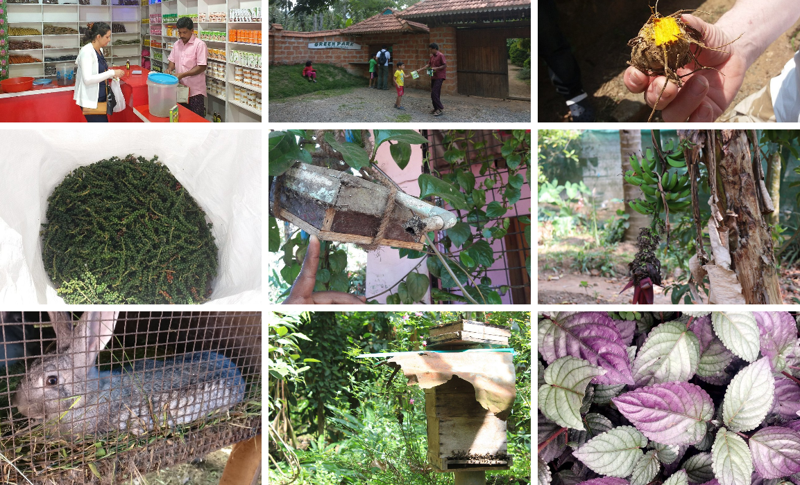
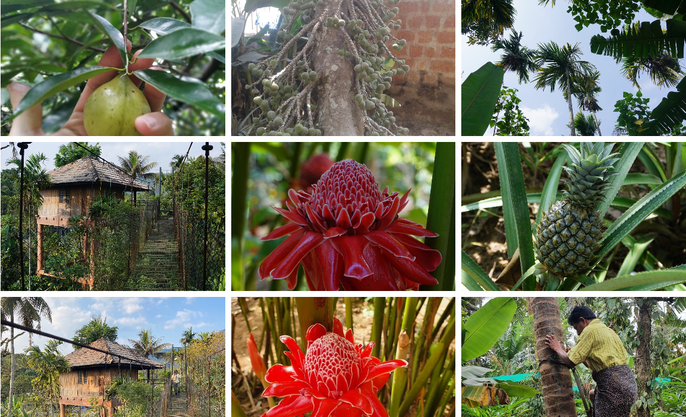

Green Land Spice Garden is a beautiful spice plantation located in Idukki, Kerala. It is well known for its wide variety of spices, herbs, and medicinal plants. Visitors can see crops such as cardamom, pepper, cinnamon, cloves, nutmeg, vanilla, coffee, and cocoa. Guided tours explain the cultivation and uses of these spices in cooking, medicine, and daily life.
The garden is surrounded by lush greenery, making it a peaceful destination for nature lovers. Visitors can enjoy a relaxing walk through the plantation, learn about Kerala's spice farming traditions, and purchase fresh spices and herbal products. Green Land Spice Garden is an ideal place for tourists, students, and families who want to experience the rich agricultural heritage of Kerala.



Green Land Spice Garden is a famous organic spice plantation located at Spring Valley, Thekkady, in Idukki District, Kerala. Established in 1979, it is a family-owned plantation where visitors can explore spice cultivation, medicinal plants and organic farming. The garden is well known for its guided tours and high-quality Kerala spices.
Green Land Spice Garden was established in 1979 as a family-owned organic spice plantation. Over the years, it has become one of the most visited spice gardens in Thekkady, welcoming tourists from India and abroad to learn about Kerala's spice heritage. 1
The plantation contains many medicinal herbs and Ayurvedic plants. Visitors can learn about their medicinal uses, cultivation methods and traditional importance through guided tours.
The plantation is home to a wide variety of spice plants, fruit trees, medicinal herbs and tropical vegetation. Its lush greenery provides a peaceful environment for visitors.
Today, Green Land Spice Garden is one of the leading spice tourism destinations in Thekkady. It is popular for organic farming, educational plantation tours, Ayurvedic plants and premium-quality Kerala spices. 2